02:15
02:15 - 06:00
北京大兴机场 → 素万那普国际机场
สนามบินสุวรรณภูมิ
去之前在去哪儿预约了接机服务，会有小管家添加微信提供特别详细的落地指引，适合第一次来泰国的人，安全省心而且跟Grab价格差不多。
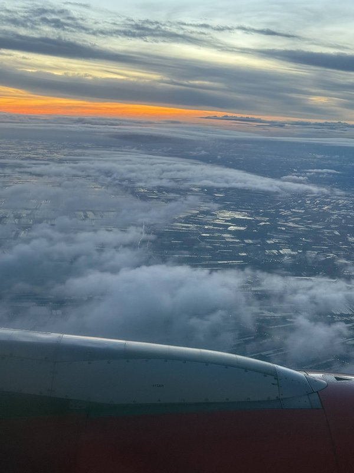
红眼班机 · 06:55
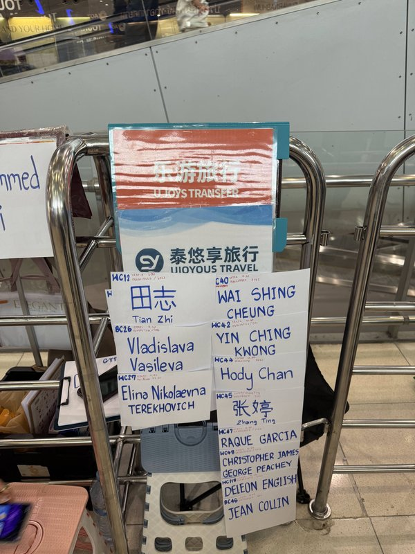
去哪儿接机 · 07:09
06:00
06:00 - 08:00
丽仕精品酒店
The Luxx Boutique Hotel
紧邻伦披尼公园和朱拉隆功大学，酒店在一条主街的小巷子里，很安静。整体装修风格偏自然木质调，很独特，二楼还有一家泳池Bar（但不吵）。但是缺点是房间有股霉味，灯光很昏暗，下次来不会选择这里了。
Luxx Hotel · 09:31
08:00
08:00 - 09:30
Soi Prachum Market
ตลาดซอยประชุม
当地人的local morning market，有很多本地小吃和水果。如果下了早班机不知道去哪儿又刚好在这附近住推荐来试试。强烈推荐船面（80铢）和泰国小油条（10铢），也可以尝尝椰子冻（竟然是咸甜口的），但绝对不要买榴莲（260铢），狠狠踩雷了。（这里和最后一天泰餐课逛的市场是同一个，也算首尾呼应，圆满了）
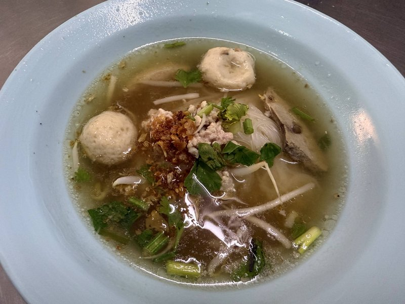
船面 · 08:50
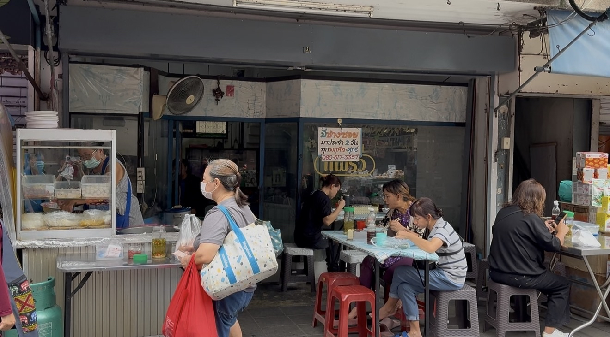
认准这家船面
09:30
09:30 - 10:30
Hidden Agenda
ฮิดเดน อเจนด้า
按摩店附近偶遇的一家小酒馆（说他是酒馆但我其实是白天来的），只点了一份泰式早餐（280铢），白粥配肉粒和凉菜，意外的还不错，但也完全没必要单独来
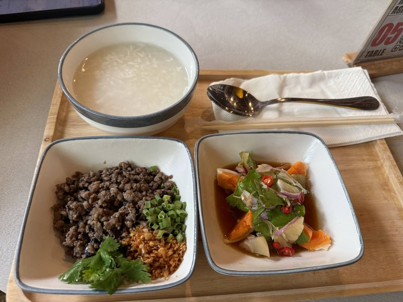
泰式早餐 · 09:56
10:40
10:40 - 13:40 · 天堂放松 165min
Let's Relax Spa
เล็ทส์ รีแล็กซ์ สปา
404元/人，这里相比起国内性价比还是蛮高的，但是在泰国本地并不算便宜。环境和服务是非常好的，按完还有芒果糯米饭和茶水。阿姨的手法偏柔和挂，不像印象中的泰式按摩做各种高难度动作，给我按睡着了。但缺点是房间太冷，趴下按背的时候脖子很受罪。综合来说不推荐。
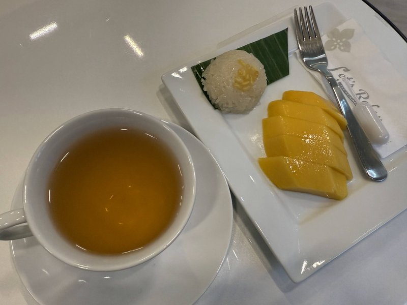
芒果糯米饭 · 13:33
16:00
16:00 - 16:30
Khlong Bang Luang Market
ตลาดชุมชนคลองบางหลวง
没玩明白，打车到了目的地之后莫名其妙上了游船（还没收费），一路上不知道目的地是哪儿地在河上飘（当时一度心里很慌），大概开了十几分钟之后就到目的地了，一路上吹风很舒服，还能看到水门大佛。下船之后收了一人10铢，如果这就是船票那简直太便宜了。但好像我们到了市场就被遣返了，至今不知道这个水上市场到底啥样。
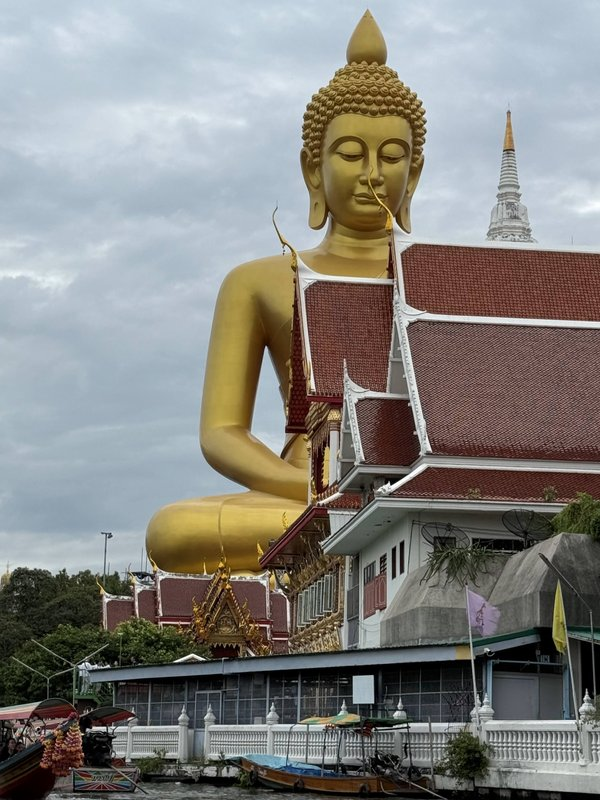
水门大佛 · 16:20
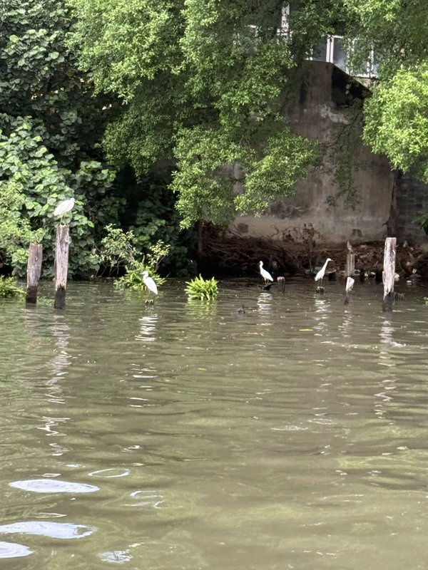
游船 · 16:24
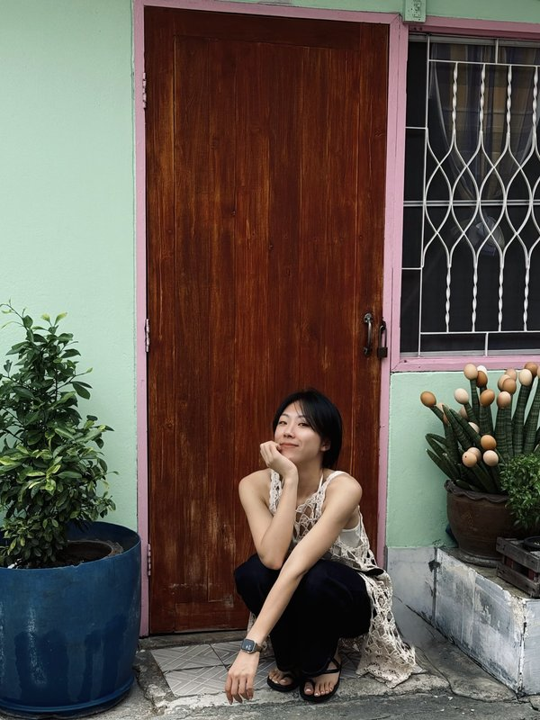
游船之后
17:00
17:00 - 19:00
朱拉大学夜市
ตลาดนัดจุฬา
随便找一个想吃的都不踩雷，泰国就是这么好吃 😋
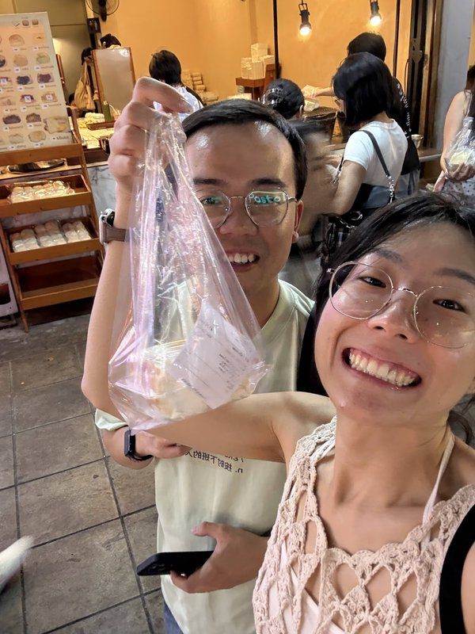
烤面包 · 18:18
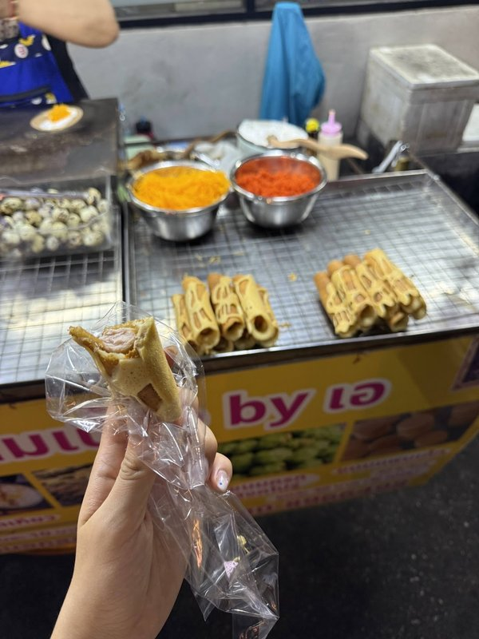
蛋卷 · 18:43
西瓜冰沙 · 18:58
10:00
10:00 - 13:00
乍都乍周末市集
ตลาดนัดจตุจักร
早上逛市集会比较凉爽，逛累了随处都有吃饭和按摩的地方。最惊喜的是市场有宠物区（Dog Country Cafe），300铢可以和狗狗玩。小红书上有个很出名的古着店DD mall就在市集附近，下次有空可以一起逛逛
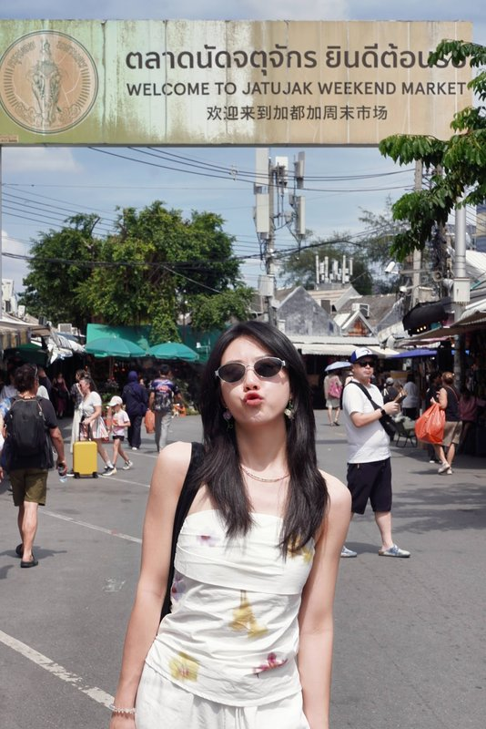
乍都乍周末市场
Dog Country Cafe
14:00
14:00 - 22:00
BLACKPINK 演唱会
สนามราชมังคลากีฬาสถาน
可以提前去现场取票，虽然到得早但不无聊，有快闪店和拍照区
取票
BLACKPINK
10:00
10:00 - 11:00
伦披尼公园
สวนลุมพินี
伦披尼公园距离酒店步行4分钟，可以看到本土生物水巨蜥，生态环境挺好的，也很出片。离得近的尽管去享受下20分钟公园效应
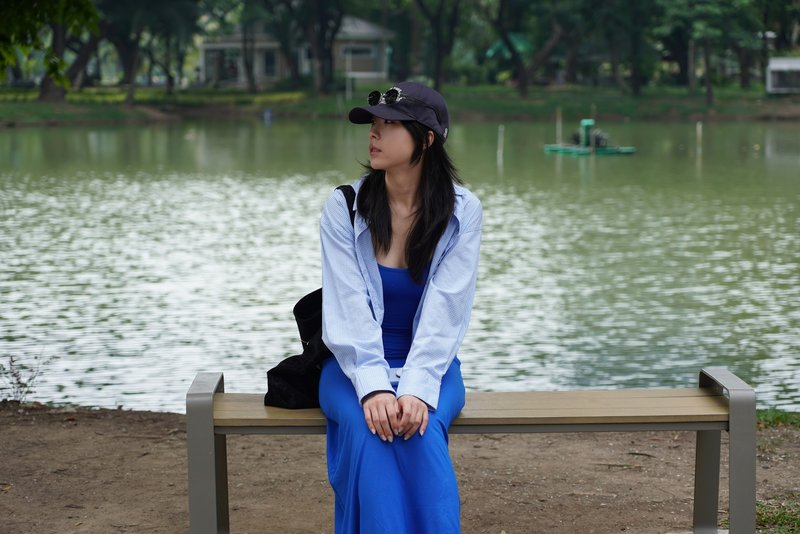
伦披尼公园
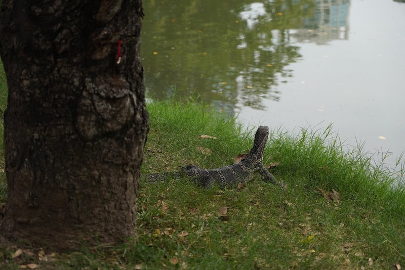
水巨蜥
11:00
11:00 - 12:00
朱拉50巷泰国厨房
ครัวไทย ซอย 50 จุฬา
人均180泰铢，小红书爆火店铺，但是真的很好吃，非常幸运去的时候没有排队，等吃完出来就全是人了
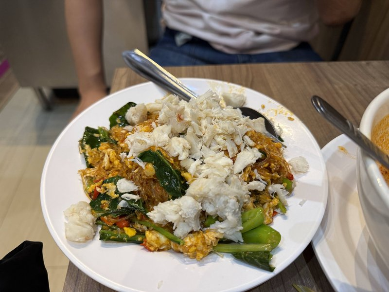
蟹肉粉
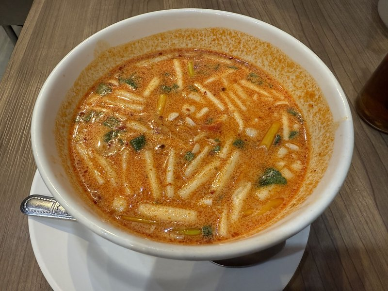
冬阴功汤
12:00
12:00 - 15:30
GalileOasis Art Space
กาลิเลโอเอซิส
藏在小巷子里的非常chill的一个文艺区，有咖啡有文创，大约半小时就能逛完，还很适合数字游民办公，景色很棒。去的话直接定位到piccolo vicolo咖啡（曼谷有两家别跑错了）
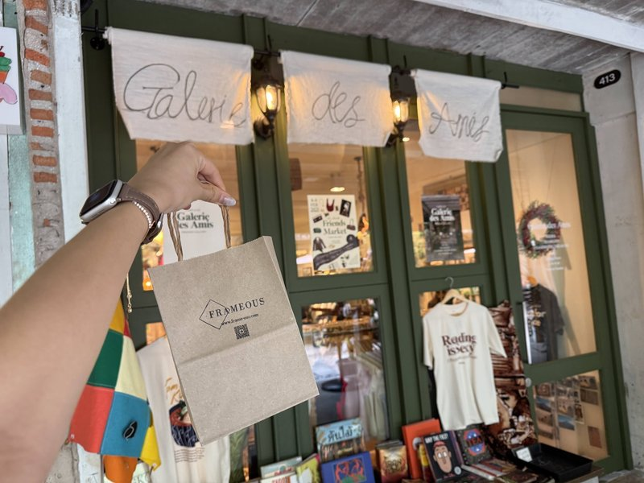
文艺小店
piccolo vicolo cafe
15:00
15:00 - 19:00
嵩越路 Song Wat
ถนนทรงวาด
非常适合citywalk的街区，有很多工艺品、古着、咖啡和甜品店，走走逛逛很有意思，涂鸦墙也很出片。但毕竟是游客区，整体价格还是很高的。旁边就是唐人街（但我没去）
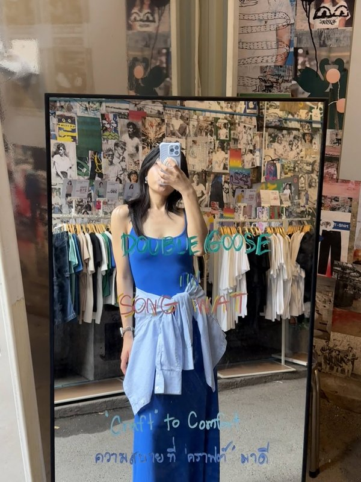
对镜拍
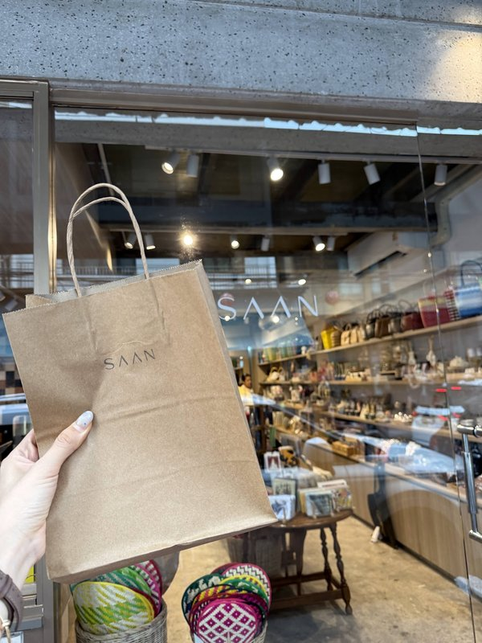
SAAN
19:00
19:00 - 22:00
拉查达慕泰拳
สนามมวยราชดำเนิน
一等座，看得很清楚，初次体验还是很有趣的
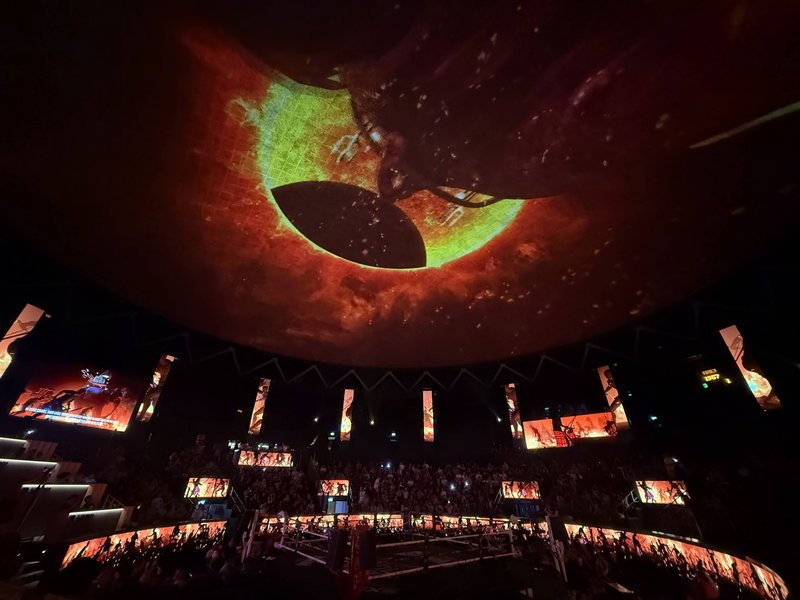
泰拳
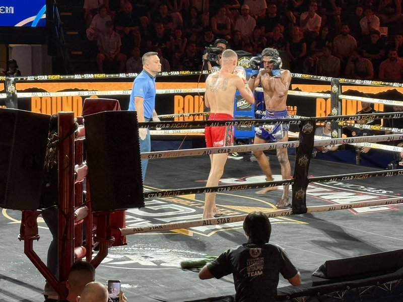
黑白混合打
08:30
08:30 - 12:00
颂蓬泰式烹饪课程
Sompong Thai Cooking School
上午场的主要行程是逛市场，老师带队介绍食材，还会买下一些特色小吃让我们品尝。做泰餐部分主打体验，不要指望学到什么，会用锅铲就行了，但是每道菜都蛮好吃的。这里有各个国家的人，在这里认识了一个美国妹妹。
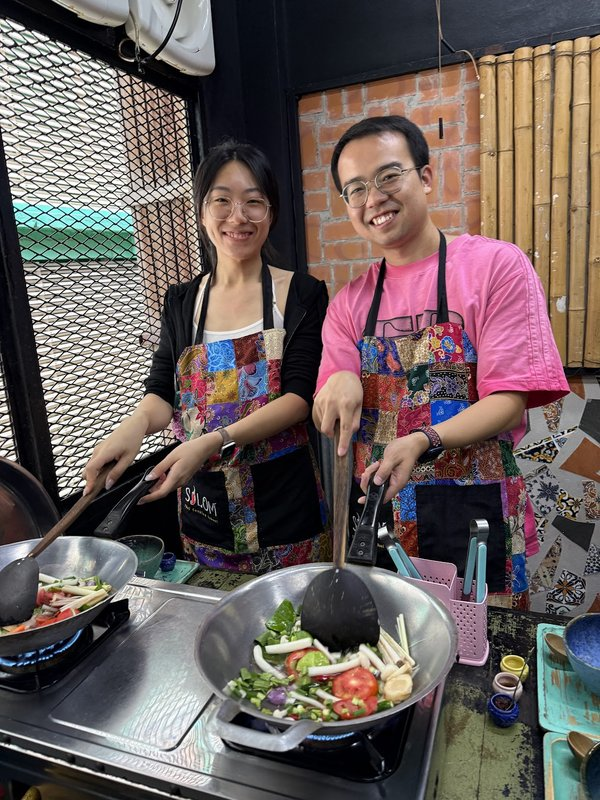
做泰餐
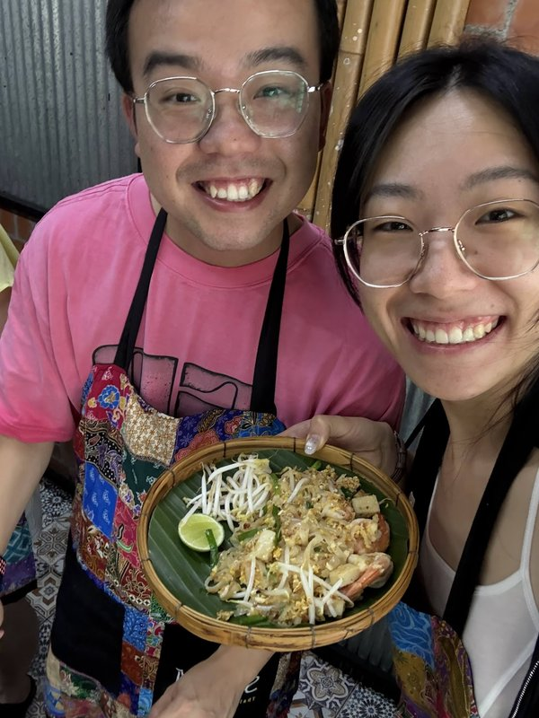
成品展示
12:00
12:00 - 14:00
Central World
เซ็นทรัลเวิลด์
可以去买买本地品牌，puff鞋蛮好穿的，部分消费可以退税。
Central World
14:00
14:00 - 16:00
BigC
บิ๊กซี ซูเปอร์เซ็นเตอร์
BigC在Central World商场对面的大超市，可以购买特产和礼物，类似国内的物美，非常大非常好逛，建议多留点时间，满2000泰铢金额可以退税